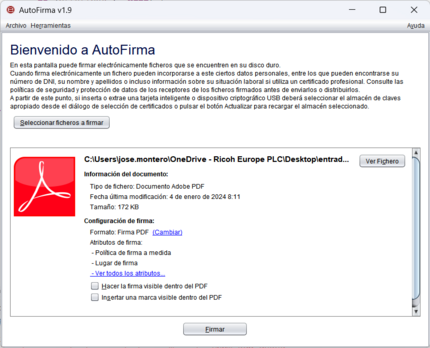

Desde esta pantalla puede selecionar el documento que desea firmar.
Para seleccionarlo, pulse el botón "Seleccionar fichero a firmar" o arrástrelo al área indicada
(el recuadro de color gris oscuro).
Al cargar el documento a firmar, se le mostrarán ciertos detalles sobre este:

En el recuadro habilitado para arrastrar el documento que deseaba firmar le habrá aparecido la información de este fichero. Además, si dispone de una aplicación predeterminada para este tipo de documentos, le aparecerá el botón "Ver fichero" con el que podrá abrirlo (se utilizará la acción predeterminada del sistema operativo para este tipo de ficheros).
El botón "Firmar fichero" situado en el lado inferior de la pantalla le permitirá firmar el documento. Si el almacén de certificados de su sistema operativo todavía no hubiese terminado de cargarse, el botón aparecerá deshabilitado y con una imagen animada de espera. En ese caso, por favor, espere a que esta desaparezca y se habilite el botón. Una vez pulsado el botón, el programa actuará según el tipo de documento seleccionado:
| Tipo de documento | Imagen | Comportamiento |
|---|---|---|
| Adobe PDF | Se realizará una firma avanzada PDF sobre el documento (PAdES Baseline). | |
| XML | Se realizará una firma avanzada XML sobre el documento (XAdES Baseline). | |
| Documento binario | Se realizará una firma avanzada binaria sobre el documento (CAdES Baseline). | |
| Factura electrónica | Se realizará la firma de la factura electrónica. | |
| Documento OOXML | Se realizará la firma del documento OOXML. | |
| Documento ODF | Se realizará la firma del documento ODF. | |
| Firma electrónica | Se agregará una nueva firma electrónica al documento de firma. |
Como excepción a este último caso, no se puede volver a firmar una factura electrónica ya firmada en formato Factura-e.
El formato de firma a utilizar por cada tipo de fichero viene establecido en el panel de Preferencias de la aplicación.
Al firmar el fichero se mostrará una ventana para el guardado de la firma generada. Al guardar la firma en cualquier directorio, se mostrará la pantalla de detalle de la firma.
Puede configurar el formato de firma a utilizar por cada tipo de fichero y las particularidades de estos formatos, así como el comportamiento general de la aplicación, a partir del panel de preferencias disponible a través del menú Opciones.
La firma en formato PAdES permite configurar el que la firma sea visible en el PDF. Para ello será necesario marcar la casilla "Hacer la firma visible dentro del PDF". Esta opción aparecerá marcada o no por defecto según se haya establecido en el panel de preferencias. Al seleccionar esta casilla, se nos mostrará el panel de Propiedades de firma visible PDF.
De forma complementaria a los botones y elementos gráficos, puede usar también la barra de menú o los siguientes aceleradores de teclado:
Control (⌘ en Mac OS X) + S : Seleccionar fichero de firma.Control (⌘ en Mac OS X) + F : Firmar el fichero seleccionado.